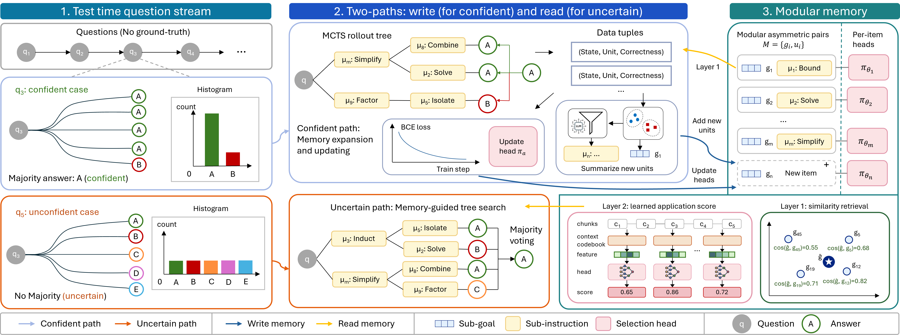
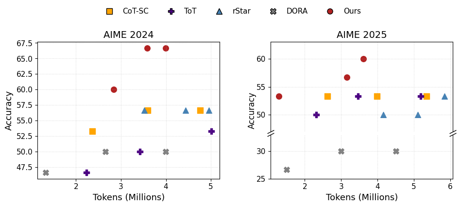

Abstract
Large language models increasingly improve their reasoning at test time via additional computation, yet most procedures treat each problem in isolation. When problems arrive sequentially, accumulating reusable experience across them can further improve performance. Existing memory-based methods either store whole-solution templates that generalize poorly to novel problems or use heuristic step-level selection that is not optimized for final-answer correctness.
We propose MILES (Modular Instruction Memory with LEarnable Selection for self-improving LLM reasoning), a framework that dynamically expands step-wise memory and applies correctness-optimized memory composition under realistic test-time constraints. MILES maintains modular memory units consisting of asymmetric pairs of sub-goal embeddings and sub-instructions, each associated with a learnable selection head.
This memory structure enables a coarse-to-fine retrieval mechanism: the coarse level enables memory expansion and collects supervision for training selection heads from confident samples, while the fine stage applies learned selection heads to rerank coarse-level candidates and guide reasoning for uncertain samples. Experiments across six reasoning benchmarks demonstrate the effectiveness, robustness, and transferability of MILES.
Why MILES?
Existing test-time memory methods often retrieve whole solutions or rely on heuristic step-level selection. MILES turns memory reuse into learnable, step-wise composition.
Existing memory-based reasoning
✗ Whole-solution retrieval generalizes poorly to novel problems.
✗ Step-level selection is often based on similarity or prompting.
✗ Selection is not directly optimized for final-answer correctness.
MILES
✓ Modular step-wise memory.
✓ Learnable memory selection.
✓ Incremental memory expansion.
✓ Frozen LLM, without parameter updates.
Method
MILES organizes reusable reasoning experience as modular instruction memory and applies a two-layer selection mechanism to guide uncertain reasoning cases.
1. Modular memory
The sub-goal embedding acts as a retrieval key, while the sub-instruction provides natural-language guidance for generation.
2. Coarse-to-fine selection
Layer 1: similarity-based retrieval expands memory and collects data.
Layer 2: learned selection heads rerank candidate memory units by applicability.
3. Self-improvement
Confident samples provide pseudo-supervision for memory expansion and selection-head learning, which later guides uncertain samples.
Main Results
MILES consistently matches or outperforms prior methods across six reasoning benchmarks and four frozen backbones.
| Dataset | Model | ZS-CoT | SC | DC | BoT | Ours |
|---|---|---|---|---|---|---|
| MATH-500 | GPT-4.1-mini | 88.00 | 89.40 | 87.00 | 86.80 | 92.60 |
| MATH-500 | GPT-4.1 | 87.20 | 88.00 | 83.20 | 84.80 | 91.60 |
| AIME 2024 | GPT-4.1-mini | 46.67 | 56.67 | 63.33 | 50.00 | 66.67 |
| AIME 2024 | GPT-4.1 | 40.00 | 50.00 | 53.33 | 50.00 | 53.33 |
| AIME 2024 | GPT-OSS-20B | 83.33 | 93.33 | 43.33 | 50.00 | 93.33 |
| AIME 2024 | Qwen3-30B-Instruct | 70.00 | 83.33 | 23.33 | 63.33 | 86.67 |
| AIME 2025 | GPT-4.1-mini | 46.67 | 53.33 | 60.00 | 40.00 | 60.00 |
| AIME 2025 | GPT-4.1 | 33.33 | 36.67 | 50.00 | 33.33 | 40.00 |
| AIME 2025 | GPT-OSS-20B | 86.67 | 90.00 | 36.67 | 33.33 | 93.33 |
| AIME 2025 | Qwen3-30B-Instruct | 60.00 | 70.00 | 30.00 | 53.33 | 73.33 |
| GPQA-Diamond | GPT-4.1-mini | 70.20 | 71.72 | 63.64 | 66.67 | 73.23 |
| GPQA-Diamond | GPT-4.1 | 68.94 | 68.69 | 64.65 | 61.11 | 70.71 |
| GPQA-Diamond | GPT-OSS-20B | 68.18 | 71.72 | 61.62 | 37.37 | 74.24 |
| GPQA-Diamond | Qwen3-30B-Instruct | 70.20 | 72.23 | 42.42 | 67.68 | 73.74 |
| MMLU-Pro Physics | GPT-4.1-mini | 82.00 | 83.50 | 83.50 | 83.00 | 85.00 |
| MMLU-Pro Physics | GPT-4.1 | 81.00 | 83.00 | 78.00 | 84.00 | 84.50 |
| MMLU-Pro Physics | GPT-OSS-20B | 85.50 | 86.50 | 79.00 | 42.00 | 87.00 |
| MMLU-Pro Physics | Qwen3-30B-Instruct | 87.00 | 88.50 | 63.50 | 86.00 | 88.50 |
| MMLU-Pro Engineering | GPT-4.1-mini | 65.50 | 73.50 | 67.50 | 70.50 | 75.00 |
| MMLU-Pro Engineering | GPT-4.1 | 75.50 | 78.50 | 72.00 | 67.50 | 80.00 |
| MMLU-Pro Engineering | GPT-OSS-20B | 68.50 | 70.00 | 66.50 | 41.50 | 71.00 |
| MMLU-Pro Engineering | Qwen3-30B-Instruct | 74.50 | 78.00 | 52.00 | 75.50 | 81.00 |
Final-answer accuracy (%) on six reasoning benchmarks. Per-row best results are bolded.
Accuracy–Efficiency Tradeoff
MILES achieves a strong accuracy-token tradeoff compared with Self-Consistency, Tree-of-Thoughts, rStar, and DORA.

Transferability and Reuse
Cross-model transfer
Memory built from auxiliary-model rollouts improves GPT-4.1-mini reasoning on AIME 2024 and AIME 2025.
Suggested asset: assets/transfer_cross_model.png
Pre-built memory
Memory pre-built on separate training sets improves uncertain samples on AIME 2025 and GPQA-Diamond.
Suggested asset: assets/prebuilt_memory.png
Ablation and Robustness
Two-layer selection
Layer 1 retrieval and Layer 2 learned selection jointly provide the best performance.
Suggested asset: assets/ablation_table.png
Selection quality
Improved sub-instruction selection accuracy correlates with better final-answer accuracy.
Suggested asset: assets/selection_quality.png
Robust streams
MILES remains stable under different sample orders and rollout budgets.
Suggested assets: assets/rollout_budget.png, assets/sample_order.png
Citation
@article{tong2026miles,
title={MILES: Modular Instruction Memory with Learnable Selection for Self-Improving LLM Reasoning},
author={Tong, Ruilin and Gong, Dong},
year={2026}
}